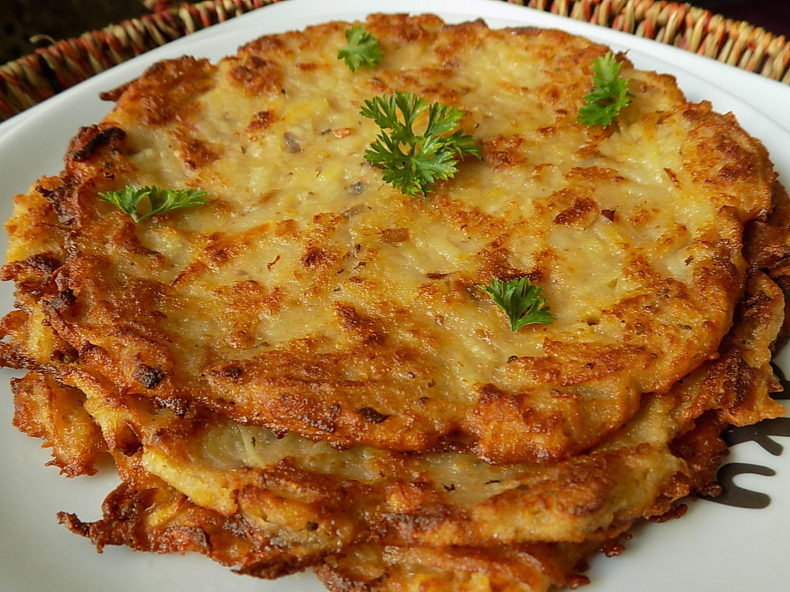

Bramboráky

Popis
Ideální recept na zpracování zbytku brambor a úklid surovin v lednici. Dietka to úplně není, ale občas je potřeba trochu zhřešit.
Ingredience
- 500g brambor
- 150ml mléka
- 250g uzeniny
- 2 vejce
- 100g hladké mouky
- česnek
- majoránka
- olej či sádlo na usmažení
Postup
- Brambory oloupeme, umyjeme a nastrouháme na jemno. Uzeninu nakrájíme na kostičky.
- V míse smísíme nastrouhané brambory, uzeninu, mléko, vejce a koření a vše řádně promícháme.
- Na pánvi rozehřejeme tuk a postupně po dávách smažíme bramboráky. Množství směsi na jeden bramborák přizpůsobíme velikosti pánve a požadované tloušťce bramboráku.
- Hotový bramborák můžeme osušit papírovou utěrkou k odsání přebytečného tuku.